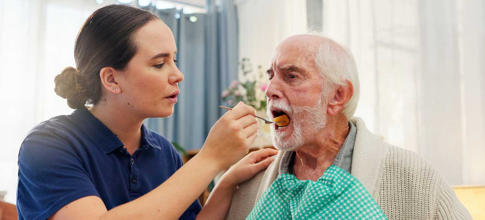
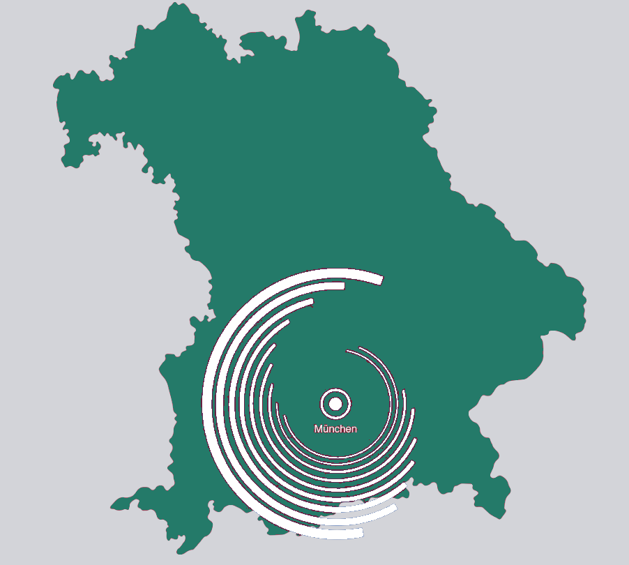

Individuelle Unterstützung von der Grundpflege bis zur hauswirtschaftlichen Versorgung.
Jetzt Beratung anfragenKompetente Pflege zu Hause – in vertrauter Umgebung

Der ambulante Pflegedienst YadeCare aus München bietet Ihnen eine liebevolle und fachkundige Pflege direkt in den eigenen vier Wänden. Unser Ziel ist es, pflegebedürftigen Menschen ein Leben in ihrer gewohnten Umgebung zu ermöglichen – mit Würde, Sicherheit und Geborgenheit. Ganz gleich, ob nach einem Krankenhausaufenthalt, einer Rehabilitationsphase oder aufgrund altersbedingter Einschränkungen: Als kompetenter ambulanter Pflegedienst in München entwickeln wir gemeinsam mit Ihnen individuelle Pflegekonzepte, die optimal auf Ihre persönlichen Bedürfnisse abgestimmt sind.
Persönlich, Vertrauensvoll und Professionell. Als Gast in Ihrem Zuhause legen wir größten Wert auf Respekt und den Schutz Ihrer Privatsphäre. Unser Anliegen ist es, eine vertrauensvolle Atmosphäre zu schaffen, in der Sie sich rundum wohlfühlen können. Darüber hinaus bieten wir Ihnen durch unser erfahrenes Fachpersonal einen kostenfreien und umfangreichen Service an: Neben der pflegerischen Versorgung übernehmen wir auf Wunsch auch sämtliche organisatorischen Aufgaben – von der Kommunikation mit Ämtern und Pflegekassen bis hin zur Abwicklung mit Krankenkassen oder anderen Behörden. So stellen wir als ambulanter Pflegedienst München YadeCare sicher, dass Sie oder Ihre Angehörigen eine ganzheitliche Betreuung und bestmögliche Pflege in jeder Hinsicht erhalten.
Bei Ambulanter Pflegedienst YadeCare verstehen wir Pflege nicht nur als Verpflichtung, sondern als einen wesentlichen Bestandteil unseres täglichen Handelns. Unsere Arbeit ist geprägt von Empathie, Respekt und fachlicher Kompetenz, mit dem Ziel, jedem einzelnen Klienten die bestmögliche Betreuung zu bieten. Wir nehmen uns Zeit, um die individuellen Bedürfnisse und Lebenssituationen unserer Patientinnen und Patienten genau zu verstehen. So können wir eine Pflege gewährleisten, die nicht nur professionell, sondern auch menschlich und persönlich ist.
Gegenstand des Unternehmens ist der Betrieb eines ambulanten Pflegedienstes. Die Gesellschaft erbringt Leistungen der häuslichen Krankenpflege gemäß § 37 SGB V, Pflegeleistungen nach dem SGB XI, 24-Stunden-Pflege und -Betreuung im häuslichen Umfeld, Betreuungs- und Entlastungsleistungen, hauswirtschaftliche Versorgung sowie Assistenz- und Unterstützungsleistungen für hilfs- und pflegebedürftige Personen. Darüber hinaus bietet die Gesellschaft Beratungsleistungen für Pflegebedürftige und deren Angehörige an.
Die YadeCare GmbH ist ein ambulanter Pflegedienst mit Sitz in München. Unser Ziel ist es, pflegebedürftigen Menschen eine professionelle, zuverlässige und zugleich menschliche Betreuung in ihrem eigenen Zuhause zu ermöglichen. Unser erfahrenes Team aus qualifizierten Pflegekräften unterstützt unsere Patientinnen und Patienten individuell und mit viel Einfühlungsvermögen im Alltag. Dabei legen wir großen Wert auf Respekt, Würde und Vertrauen. Zu unseren Leistungen gehören unter anderem die häusliche Krankenpflege gemäß § 37 SGB V, Pflegeleistungen nach SGB XI, Unterstützung im Alltag sowie Beratungs- und Betreuungsleistungen für pflegebedürftige Menschen und ihre Angehörigen. Als ambulanter Pflegedienst möchten wir dazu beitragen, dass unsere Patientinnen und Patienten möglichst lange selbstständig und sicher in ihrer vertrauten Umgebung leben können. Die Zufriedenheit und das Wohlbefinden unserer Patientinnen und Patienten stehen für uns an erster Stelle.

089 / 45151550
info@yadecare.de
München, Deutschland
Wir sind rund um die Uhr für Sie erreichbar und beraten Sie gerne zu unseren Pflegeleistungen.